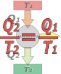

|
NO ME SALEN
(APUNTES TEÓRICOS DE BIOFÍSICA DEL CBC)
TRANSFORMACIONES REVERSIBLES E IRREVERSIBLES
|
|

|
| |
REVERSIBLE, IDEAL, DEFINED
It is very important to understand reversible transformations, among other things, because the definition of entropy requires the idea of heat exchanged in a reversible reaction, Qrev. |
| |
| |
 |
entropy variation |
|
|
|
Reversible transformations don't actually exist. In our universe it is forbidden to “go in reverse”. A small portion of the universe can go back (for example: nothing prevents you from reading this note from the beginning because you realized that it needs to be read more carefully) ... but the universe as a whole can't.
And if reversible transformations don't exist ... what do we mean when we talk about them? We are referring to that impassable boundary, to which we can approach but never transcend. That is called an ideal transformation.
What are the characteristics of these ideal, reversible transformations
- Total entropy variation (the one from the considered system plus the one from its environment) is null;
- all intermediate steps are defined (they are known with certainty);
- every one of its step occurs very slowly;
- can be the most efficient ones;
- don't exist in our universe, but they establish a limit that is useful to know.
From all those characteristics, the only definitive one (this is, that by itself is enough to define the transformation) is the first one: the total entropy variation is zero.
Reversible thermal machine (ideal, from Carnot)
The first one to imagine a reversibly functioning thermal machine was the French physicist and military Sadi Carnot in 1822. And he concluded that such a machine would have the highest efficiency possible. Although he came to a correct conclusion starting from erroneous premises (he thought that the heat was an invisible and perennial fluid) from then to the "reversible" machines also are called "Carnot's machines". |
|
|
|  |
The Carnot Machine doesn't violate the 2nd Law. Then, the total entropy in the process increases, ΔSU > 0. But since the Second law doesn't say how much it should increase (ten times, one tenth, one hundredth, one millionth, etc...) we can take the situation to the limit and say that in this ideal, it would be true that:
ΔSU = 0
It's a limit situation, don't forget it... it would be a mathematical artifice, but it is very useful to take it into account from physics. |
|
|
|
ΔSU = 0 means:
ΔSmedio + ΔSmáq + ΔScaldera = 0
where the medium is source 2, the boiler is source 1, and machine is the thermal machine itself. Both the boiler and the medium operate at constant temperature (that's why they are called source), which allows us to express the sum of entropies as follows:
(Q2/T2) + ΔSmáq – (Q1/T1) = 0
The entropy variation of the machine is zero (ΔSmáq = 0), because it acts cyclically, constantly returning to its initial state (and as the entropy is a state function it cannot vary).I put a negative sign to the source one's variation of entropy (the boiler) because it yields heat (instead the environment receives it). So, we have this:
(Q2/T2) – (Q1/T1) = 0
we can alternative write it like this:
(Q2/T2) = (Q1/T1)
from where this interesting relationship arises:
(Q2/Q1) = (T2/T1)
Remember that this equality is only established in ideal machines.
The efficiency of this ideal machine (the maximum possible for a thermal machine) would be:
η = 1 – (Q2/Q1) = 1 – (T2/T1)
Carnot also described how a machine of this kind could work, and devised a machine that could evolve cyclically between two isotherms and two adiabatic ones. These types of cycles are called Carnot cycles nowadays.
What means that entropy doesn't increase?
A mechanical engineer is interested in the reversibility and in the variations of entropy because he has seen that when machines work, energy is lost, that is to say, money is lost. But actually the entropy increase describes energy excess being lost. If the entropy is increasing, what the engineer is losing is the opportunity to use some of that thermal energy by transforming it into mechanical work. |
|
|
 |
It is impossible to extract heat from a single source and operate a cyclic machine, that is already known; the machine works between two sources, the hot and the cold one, extracting heat from one and delivering it to the other, and having a good opportunity to take part of that heat to produce mechanical work ... until here everything sound ok.
Once the sources have reached the same temperature, this opportunity is hopelessly lost.
|
|
|
|
Therefore any irreversible process in a thermal machine decreases its performance, ie, it reduces the amount of mechanical work that can be obtained from a certain amount of heat, absorbed from the expensive source. |
|
|
COURIOUS FACTS |
|
|
- Carnot imagined a substance - called "caloric" - that flowed from a environment with a higher temperature to a place with lower temperature. He thought that it flowed like water: the greater the difference in height from which it fell, the more force it could make to move a millwheel; thus, the greater the difference in temperature from which the caloric flowed, the more mechanical work it could do (ie, it could "move" more the thermal machine). He was wrong in the theorical concept of heat, but correct in the reasoning of the ideal machine.
|
|
 |
CAPTIOUS QUESTIONS |
|
- Why are thermal power plants (the large facilities that convert chemical energy from various combustibles into electrical energy) always on the banks of a river or on the coast?
|
|
| |
|
| Some rights reserved. Reproduction permitted if quoting the source. Last updated on Feb-17.Translated by Esteban Djeordjian. Buenos Aires, Argentina. |
|
|
 |
| | |
|
|